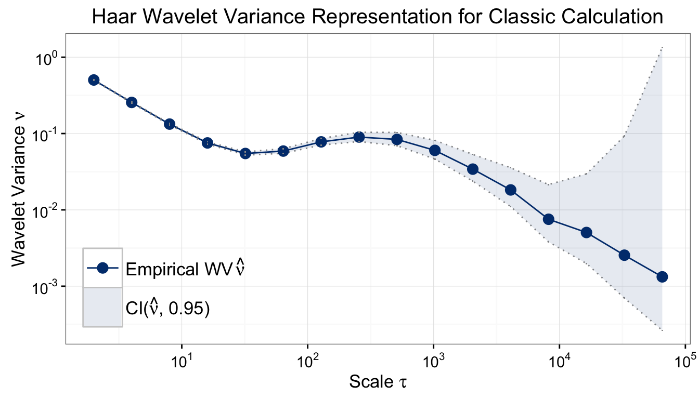

This document illustrates the features of the GMWM package which have been developed to date. The current version is still preliminary and has not been tested extensively.
To start, the GMWM package needs to be installed. There are two options to install the gmwm package: CRAN (stable) or GitHub (Development)
The installation process with CRAN is the simplest and recommended as the version released is considered to be stable:
install.packages("gmwm")For those who wish to be as up-to-date as possible with their gmwm install, we also offer the ability to obtain the development version of the package. Since it is a development version, you will need to ensure that your system has a compiler that is compatible with R.
For help on obtaining a compiler consult:
Note CRAN provides binary files of the package so there is no need to compile the stable version of the package.
Once you have compiler installed, then continue on by installing the package dependencies and finally the package itself by doing the following:
# Install dependencies
install.packages(c("RcppArmadillo","ggplot2","reshape2","devtools"))
# Install the package from github
devtools::install_github("SMAC-Group/gmwm")gmwm packageOnce the package has been installed, it can be loaded into R by:
library(gmwm)Note, that this will automatically load the package ggplot2 as well.
We can now start using the GMWM package and we will simulate a latent model composed of a White Noise (WN) and an Autoregressive model of order 1 (or AR(1) which is a reparametrization of a Gauss-Markov process). To do so, we do the following:
We now compute the Wavelet Variance (WV) of the simulated process and plot it using the following commands:
wv = wvar(xt)
plot(wv)
Based on the plot, we could assume that the model is in fact an AR(1) + WN process for which we would like to estimate its parameters. We therefore specify the model we would like to estimate
and subsequently use it in the GMWM estimating function as follows
model = gmwm_imu(TS.mod, data = xt)The difference between the true and estimated parameters is given below:
## Estim. True
## AR1 0.9888 0.99
## SIGMA2 0.0103 0.01
## WN 1.0027 1.00